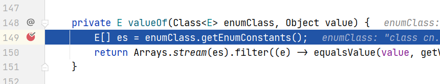

问题描述
项目持久层框架是Mybatis-plus（以下简称mybatis），数据库是Mysql
最近在将项目中的一些字段改为枚举类型，但是后来发现枚举变量一直注入不进去
通过对mybatis的 defaultEnumTypeHandler配置（默认枚举处理类） 的org.apache.ibatis.type.EnumOrdinalTypeHandler#valueOf方法进行DEBUG，发现value参数的值是布尔类型
这时第一时间想到可能是因为数据库使用tinyint类型导致的
解决方案
解决方法就很简单了，只需要将数据库字段的tinyint类型改为int就好了。

可以看到value的值变成了1，而不是上面的true了，问题至此解决
但是你说，诶，我任性，我就要设置为tinyint怎么办呢，那我们可以把tinyint的长度设置为4，这样问题也能得到解决